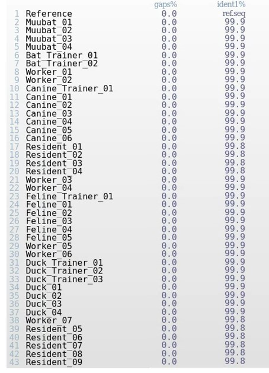

17 QC Checks
⬜ Developing Hypotheses
⬜ Sample Collection
⬜ Outbreak Investigation
⬜ Sequencing
üü© Bioinformatics
⬜ Molecular Epidemiology
⬜ Public Health Implementation
Sequence quality checks prior to genomic analysis:
Prior to genomic analysis, the Bioinformaticians and Molecular Epidemiologists worked together to generate a multiple sequence alignment of all of the sequences they had obtained so far. Once the multiple sequence alignment was finished, the team visually inspected the quality of the sequences as well as noted any similarities or differences.
The team gathered around their screens as the alignment results came in. This was a crucial step - before moving forward with any genomic analysis, they needed to verify the quality of the sequencing data and ensure that all samples aligned properly to the reference genome.
17.1 What is Sequencing Alignment and Why Does it Matter?
Example illustrating a sequence alignment Mutations are called against the reference sequence. For example sequence A has no mutations when compared to the reference, however sequence B has one mutation at base position 16 that changes a thymine to a cytosine.

One of the most powerful tools in genomics is a sequence alignment, a process that allows scientists to compare genomic sequences and look for patterns that could provide clues about the outbreak. There are many different specialized software that can generate a sequence alignment as well as genome browsers that can provide an overview of an alignment. Using an in-house specialized alignment software, the team aligned the viral sequences from infected humans, animals, and archived samples to look for similarities, differences, and possible mutations.
“Think of this like assembling pages of a shredded document”, one of the Bioinformaticians explained. “Each sequence is a tiny fragment of a much larger picture. By aligning them properly, we can reconstruct a phylogenetic tree to see how these sequences are related.”
Aligning sequences wasn’t just about assembling data; it was about uncovering a hidden evolutionary history. Every mutation, every missing base, every small change can tell a story about how the virus was spreading an evolving.
17.2 What Can We Learn from an Alignment?
As the team examined the alignment results, they noted key patterns. For instance, they looked for conserved regions, certain parts of the genome that were nearly identical across all samples, which can indicate genomic stablity. These regions might be essential for the virus’ survival and any heritable change like a mutation could have a devastating effect if it occurred in these regions. The team also looked for mutations. Mutations present in a sample could often be referred to as a SNP - single nucleotide polymorphism. Some sequences can contain SNPs, which are tiny genetic changes that could indicate viral evolution or adaptation to different hosts. The team also looked for insertions and deletions, often referred to as “indels” in the alignments. Indels are small insertions or missing bases which could suggest structural changes in the virus over time. Most importantly, the team looked for gaps in the alignment. Gaps could be missing data or low-quality sequencing reads that have appeared as gaps. These typically require further investigation to determine if gaps are true deletions or just artifacts from sequencing errors.
“Look at this!” one of the Molecular Epidemiologists pointed to the screen. “These human samples from February are similar to the muubat sequences, but with a few mutations.” After a moment of a silence, another Molecular Epidemiology asked “I wonder what the collection dates are for these sequences. Could the later sequences have more mutations than the earlier sequences?” It wouldn’t be such a farfetch’d thought. “If so, it would mean that the sequences are slowly becoming more divergent over time, especially if there’s a specific region where we see a bunch of mutations occurring” explained another Molecular Epidemiologist.
17.4 Ensuring the Data is Ready for Phylogenetics
Before moving forward with phylogenetic analysis, the team conducted a quality control check on the alignment. Any low-quality sequences, ambiguous regions, or problematic reads had to be identified and removed. “It’s good that we are doing QC on the sequences and removing the poor quality and incomplete genomes” one of the Bioinformatician mentioned. “If the alignment isn’t clean, the entire phylogenetic tree could be misleading”.
As they carefully reviewed the alignment, they specifically looked for high levels of ambiguity, specifically the amount of ambiguous or “N” bases, which could suggest potential sequencing errors. Sequences with high amounts of ambiguity, generally if greater than 10% of the whole genome, could require the samples to be re-examined and re-sequenced before being included in downstream analyses.

Multiple Sequence Alignment (MSA) Metrics of Sequences in Alignment Viewer.
The alignment file containing sequences from the outbreak aligned to the reference genome was analyzed in Alignment Viewer. Alignment Viewer shows the percentage of gaps in the genome, representing any ambiguity or incomplete coverage across the genome. ident1% compares the reference sequence with a sequence from the outbreak, and is a metric that indicates the degree of genetic similarity of the two sequences. ident1% is the fraction of reference sequence identical to the second sequence.
17.5 Discussion Ten: Understanding Alignments and Results
Looking at the table above, what do you notice about the genetic identity shared among the sequences with each other, as well as the reference? Do these genomes look complete?
Multiple Sequence Alignment View of the Sequences, NCBI Viewer
This alignment shows the whole genome of the virus from beginning to end, for all sequenced cases in the outbreak. Mutations are highlighted in red. Sequences were of high quality with no ambiguous bases or N’s.
Open alignment in new tab for full view
{kind=link}
This alignment shows the spike coding region of the genome, spanning base positions 3000 to 3500, for all sequenced cases in the outbreak. Mutations are highlighted in red. Sequences were of high quality with no ambiguous bases or N’s.
Open alignment in new tab for full view
{kind=link}
The MSA using NCBI Alignment Viewer are shown above. Part A shows the coverage and mutations across the genome, whereas part B shows coverage across the spike gene. Mutations at a base position is indicated by the red lines.
17.6 Dicussion Eleven: Interpreting Alignment Results
A. Looking at the multiple sequence alignment, what would you infer about the appearance of the mutations and where they are occurring?
B. Are most mutations occurring within a specific region of the genome? If so, why do you think that might be the case?